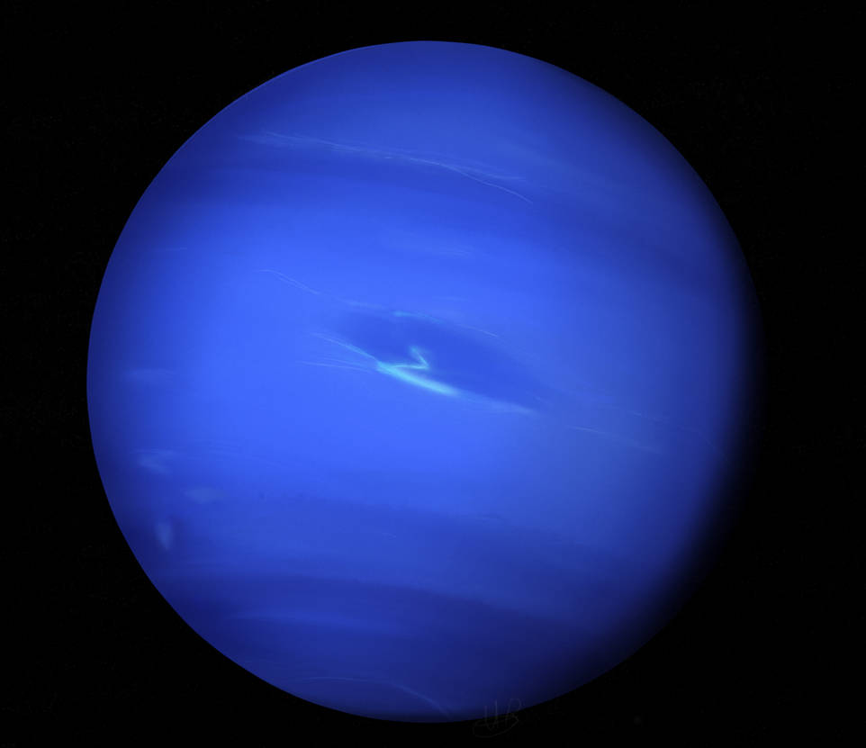

Neptun je osmá a nejvzdálenější planeta od Slunce ve Sluneční soustavě. Patří mezi ledové obry a je známý svou výrazně modrou barvou.
Neptun nemá pevný povrch. Je tvořen převážně plyny, ledem a kapalnými látkami hluboko uvnitř planety. Atmosféra obsahuje silné bouře a rychlé větry.
Atmosféra Neptunu obsahuje hlavně vodík, helium a metan. Metan pohlcuje červené světlo, což způsobuje modré zbarvení planety.
Na Neptunu byly zaznamenány nejrychlejší větry ve Sluneční soustavě, které mohou dosahovat rychlosti přes 2 000 km/h.

Neptun má několik měsíců, z nichž největší je Triton. Triton obíhá kolem planety opačným směrem než většina ostatních měsíců.
Jeden oběh Neptunu kolem Slunce trvá přibližně 165 pozemských let. Planeta byla objevena v roce 1846.